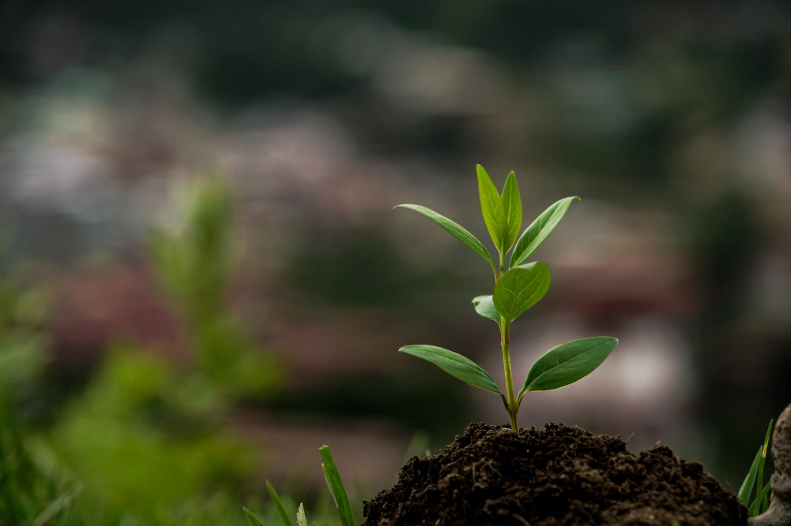
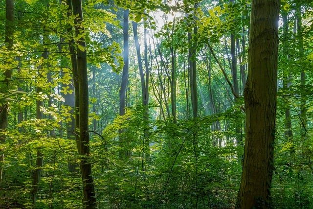
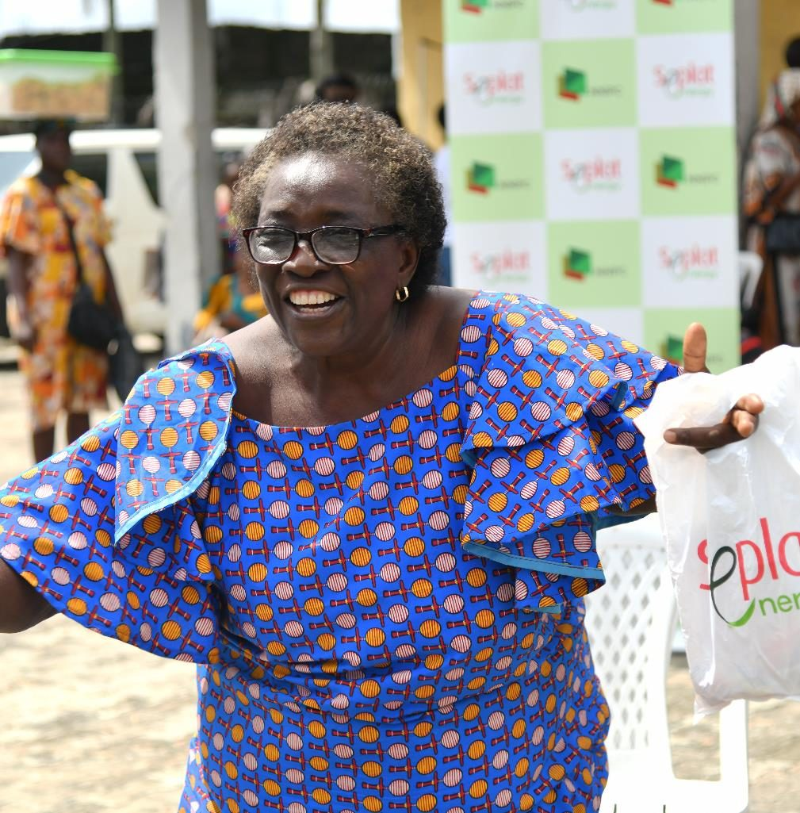
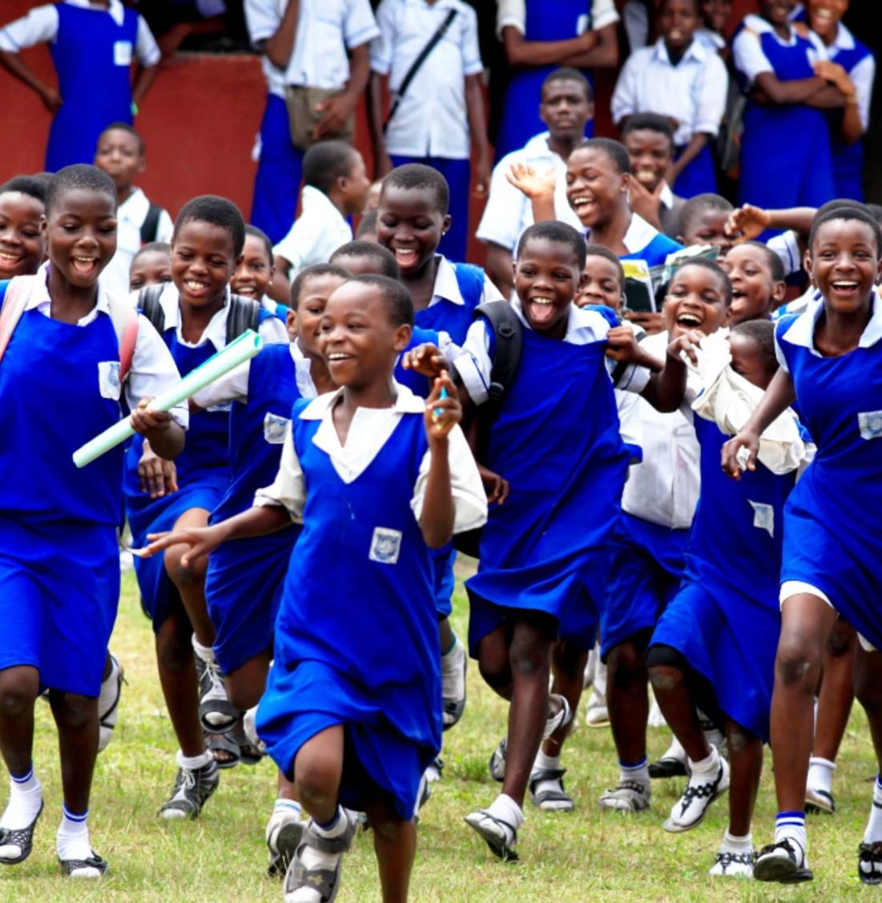
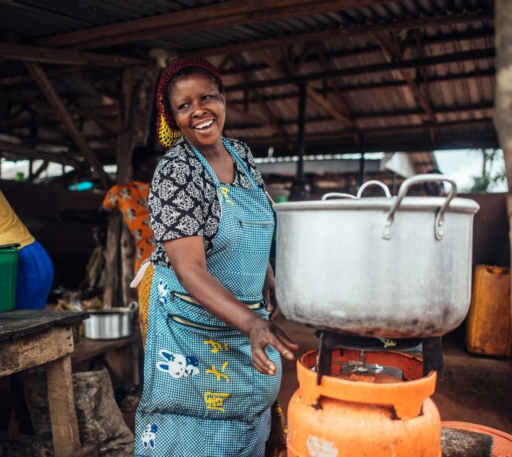
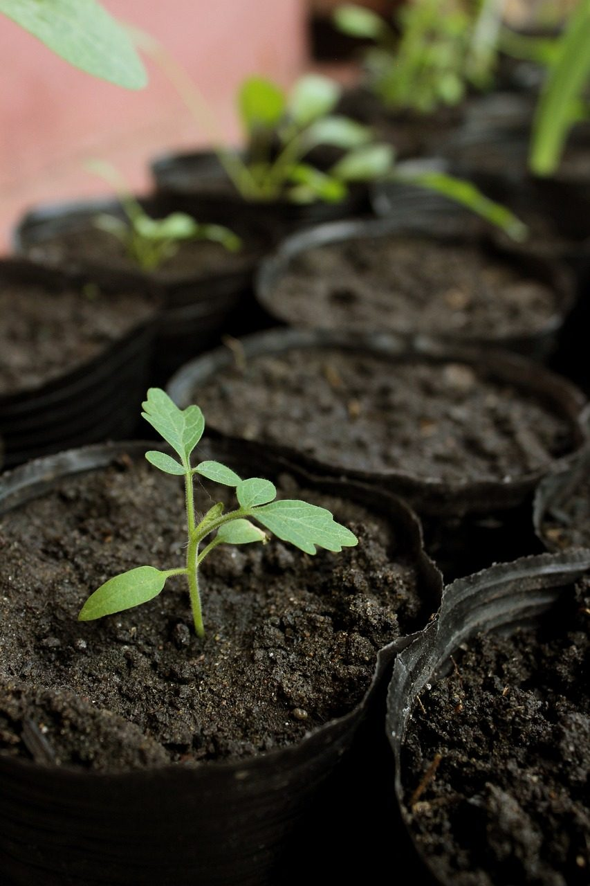

Seplat Energy × Edo State Government × Teasoo Consulting
Regreening Edo State, one million trees at a time. A flagship reforestation programme restoring degraded forest reserve, rebuilding biodiversity and locking away carbon for generations.
About the programme
The Seplat Tree4Life project, launched in 2022, exemplifies Seplat Energy's commitment to environmental sustainability and corporate social responsibility. The programme tackles deforestation, enhances biodiversity and addresses climate change through large-scale tree planting and reforestation.
Delivered through a collaborative partnership with the Edo State Government and its strategy to increase forest cover in the region, the programme aims to:

Why this matters
Across Nigeria, decades of logging, farming pressure and unregulated harvesting have thinned once-dense reserves — eroding soils, displacing wildlife and releasing stored carbon. Communities that depend on the forest for food, income and shelter feel the loss first.
Trees are the solution. Restoring native forest rebuilds soil fertility, cools the land, shelters wildlife and draws carbon dioxide out of the atmosphere — a nature-based response to the climate crisis that also creates green livelihoods where they are needed most.

Our aims
The purpose of planting is never a single win. Tree4Life is designed to deliver environmental, social and economic value together.
Draw down carbon dioxide to offset the footprint of exploration activity and generate verifiable carbon credits.
Restore natural habitats with indigenous species, supporting local wildlife and rebuilding a resilient ecosystem.
Grow environmental awareness and sustainable farming skills, adding to the body of forestry knowledge and academia.
Create green jobs and unlock sustainable agriculture, delivering lasting income to host communities.
Plant one million trees in five years, replenish the depleted forest cover of the state, and sequester carbon over a period of fifty years.— The Tree4Life goal
How the programme works
Every phase is planned across three disciplines — getting the science right, bringing communities in, and protecting what has been planted.
Pilot species were chosen with the Forestry Commission and University of Benin biodiversity team for growth rate, indigeneity and carbon capacity. A concluded biodiversity study maps soil, water and site suitability before planting.
A 1.6 km farming buffer prevents encroachment, plantation guards are trained from local communities, and nurseries are timed to the March–October rains so saplings establish strongly.
Round weeding clears competition around each seedling and fire-tracing rings the plantation against bush fires — both concluded across the 2024 planting — while guards watch against grazing and trampling.
Indigenous species
Ten indigenous species were identified with the Edo State Forestry Commission. These lead the planting programme.
Also identified: Pericopsis elata & Cordia spp. (Oma).
Community & livelihoods
Tree4Life is built on the understanding that lasting restoration depends on the people who live around the reserve. Neighbouring communities — Obagie, Igieduma, Erua, Iruhie and Oke — are engaged at every stage.
On the ground

Forest vegetable and food-tree seedlings go straight into community home gardens — nutrition and income rooted at home.

Environmental awareness sessions bring young people into the story of the reserve — and the value of protecting it.

Training in sustainable practices helps families farm the buffer productively without encroaching on the reserve.
The five-year roadmap
Yearly planting targets step up as nurseries, community structures and monitoring mature — building to a fully restored 6,000 hectares.
Biodiversity study, species selection and first plantings with core communities.
Nursery capacity and community programmes expand across the reserve.
Restoration reaches full annual pace with maturing survival systems.
Sustained planting alongside intensive maintenance of earlier phases.
Final plantings close the gap to one million trees and 6,000 hectares.

Gallery
Photography and video from the 2024 Tree4Life field programme. Summary films are available on request.
In partnership
Partner with Teasoo
Whether you are shaping a sustainability strategy, an ESG programme or a large-scale community initiative, Teasoo Consulting turns ambition into measurable outcomes on the ground.
{kind=link}
{kind=link}
{kind=link}
{kind=link}
{kind=link}
{kind=link}
{kind=link}
{kind=link}